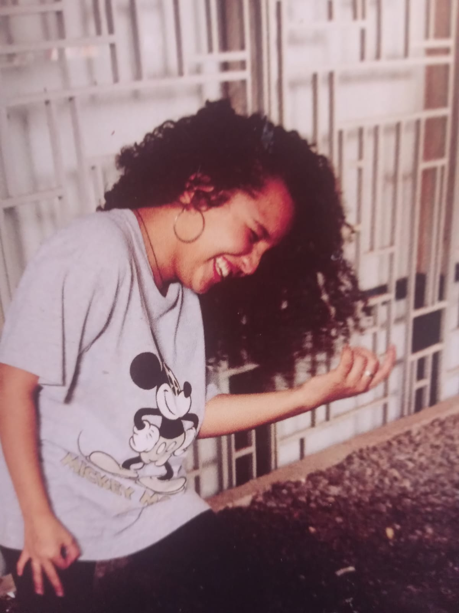
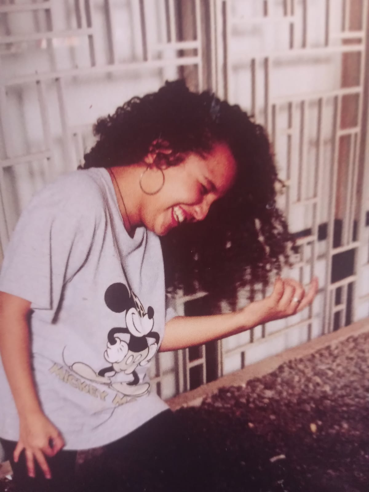

Um pouco atrasado mais acho que o que conta é a intenção kkkkk
Começando pelo "UNB sua linda aí vai ela!"

Olha a nota da primeira redaçaõ dela
E ela ainda acho que não ia passar kkkkk

Além de ser muito boa em matemática desde o ensino fundamental!
Ana saiba que todos estamos aqui para o que precisar, e estamos te apoiando na sua jornada!
#futurapedagoga

Vamos começar por uma bem rara, que é ela se divertindo kkkkkk
Aproveitem!kkkkkkk
Convenhamos que ela é uma ótima fotógrafa!


Mas quando é para si mesma, o que eu posso dizer... kkkkkk

O primeiro filho que abandona com o tio a gente nunca esquece né kkkkkk
ACIDENTE? Não kkkkkk
Apenas uma simulação de resgate, contribuindo para a sociedade em kkkk
Era bem estudiosa, mas quando se juntava com as amigas...
Só celular de primeira linha kkkkkk
GEMÊOS? Não, mas agora sabem de onde veio a beleza dela kkkk
Alguém ajuda, estamos presos kkkkkk
As crianças passariam fome nas festas, se não tivesse a sóbria do rolê kkkkkk

E como ela ama crianças, vamos com o vídeo do miguel com ela!
Como explicar o amor entre irmãos? kkkkk


E como sempre vamos finalizar com algumas fotos bonitas!
 

Feito pelo Emanuel para a Aninha
Quer se divertir mais com fotos zuadas? só clicar aqui!